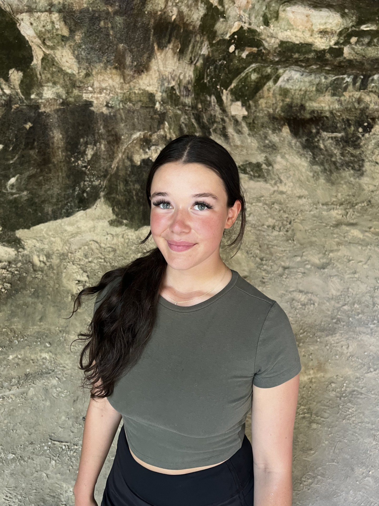
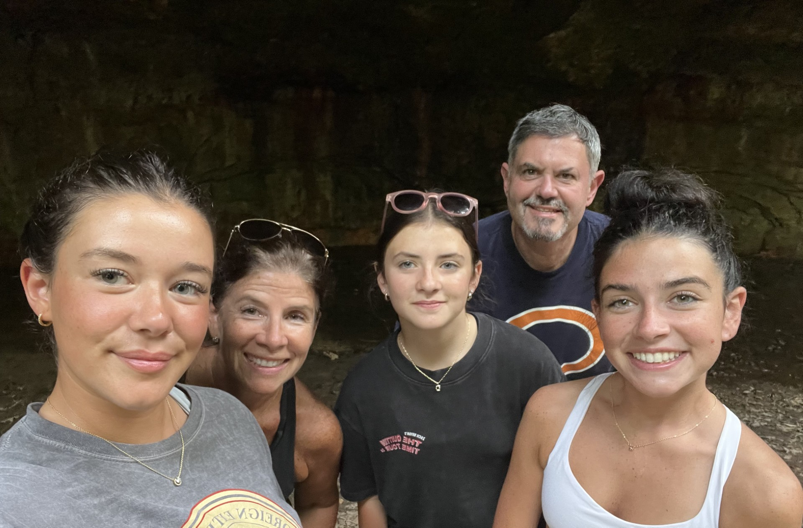

About Me
Hi, I'm Maria Vitullo! I'm originally from Elmhurst, a suburb of Chicago, where I grew up with my mom, dad and my two sisters, Nicole and Danielle. We also have an australian shepard named Roxy.
I've always been active—while I played lacrosse for a while, cheerleading was my true passion. I spent 10 years cheering and even coached a youth cheer program during high school, which taught me a lot about leadership and teamwork.
At 13, I started working as a golf caddy at Butterfield Country Club. When I started it seemed like the golf bag was as big as me, but I have gotten the hang of by now. Currently, I'm a student at the University of Iowa, pursuing a double major in Business Analytics and Finance. I originally started out in finance but found myself drawn to the technical and data-driven side of business. When I am not doing homework I am either spending time with my friends, going on walks, or working my serving job at Reunion Brewery
This past summer, I interned at an investment management firm, Cavan Capital in Oak Brook. That experience confirmed my passion for the finance world, and I hope to build a career in wealth management or as a financial analyst.
Outside of school and work, I love cooking (my pasta making skills are definitely thanks to my italian grandma), spending time in nature, hiking, and practicing yoga. Also, I genuinely enjoy learning and my favorite classes I have taken at Iowa are Corporate Finance, Meaning of Life, and of course Digital Project Management.

